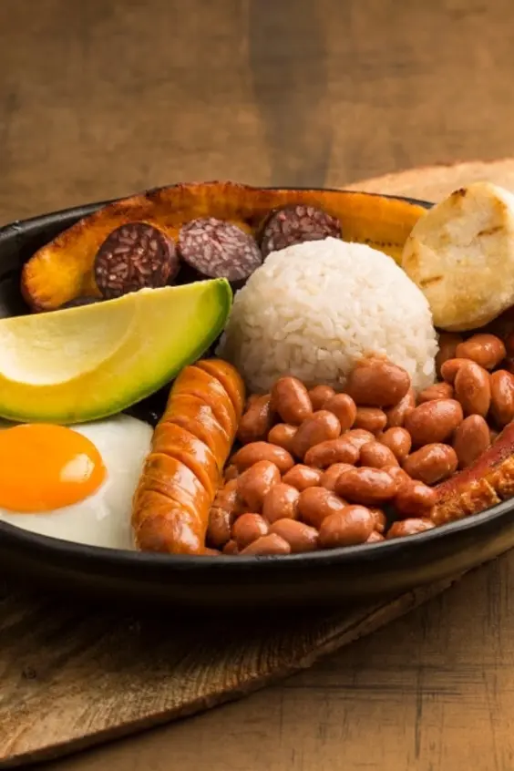

Comidas Colombianas
El auténtico sabor de Colombia, en cada bocado. 🇨🇴

En Sazón Colombiano, cada plato lleva el auténtico sabor de nuestra tierra, preparado con ingredientes frescos, tradición y mucho amor. Queremos que cada visita sea una oportunidad para compartir, disfrutar y sentirse como en casa.
Cada receta cuenta una historia, cada sabor nos conecta con nuestras raíces y cada momento en nuestra mesa se convierte en un recuerdo especial. En Sazón Colombiano, ¡siempre habrá un lugar para ti!
La historia de la gastronomía colombiana es el reflejo de una cultura llena de diversidad y tradición. Desde las arepas y los tamales hasta la bandeja paisa y el ajiaco, cada región aporta sabores únicos que nacen de la mezcla de raíces indígenas, africanas y españolas. A través de sus ingredientes, recetas y costumbres, Colombia comparte con el mundo una parte de su identidad, donde la comida es mucho más que alimento: es unión, memoria y orgullo nacional.

De las montañas a las costas, Colombia reúne una riqueza de sabores que cuentan la historia de su gente. Cada plato conserva tradiciones, celebra nuestras raíces y demuestra que la esencia de un país también se descubre alrededor de la mesa.

Los Grandes Clásicos
Platos que abrazan. La bandeja paisa que no deja espacio, el ajiaco bogotano con su aguacate y alcaparras, y el sancocho que reúne a toda la familia un domingo.
Masa de Maíz, Alma Colombiana
Arepa · Empanada · Tamales · Patacón
El maíz es el corazón de nuestra cocina. Crujientes, suaves o envueltos
en hoja de plátano: no importa la forma, siempre son la mejor idea.
Sabor a Fuego
Lechona · Carne a la llanera · Sobrebarriga · Fritanga
Carnes lentas, doradas y jugosas. Aquí se come con las manos, con ganas
y en buena compañía.
Mar y Río en tu Mesa
Pescado frito · Cazuela de mariscos · Sudado de pescado · Arroz con pollo
Frescura, coco y sazón costeña. El mar colombiano servido en cazuela.
Para Madrugar y Reconfortar
Changua · Mote de queso · Cocido boyacense · Hogao · Morcilla
Caldos, sopas y sabores caseros que calientan el alma, sobre todo en las
mañanas frías de los Andes.
Dulce Final
Pandebono · Buñuelo · Pandeyuca · Natilla · Obleas con arequipe
Porque ninguna comida colombiana termina sin algo dulce. Calientitos,
esponjosos y adictivos, sobre todo en diciembre.